박은혜
현대동양회화재료 Materials of Asian Art
105 × 210 mm
60 pages
bluxmiswinter@gmail.com
한난경
플라스틱 일기와 사전
[1] 210 × 297.5 mm
[2] 98 × 136.5 mm
[2] 98 × 136.5 mm
68 pages
nankyung99@gmail.com
피부에 닿게 느껴지는 기후변화로 개인의 실천을 넘어 기업들의 ESG 경영 등 환경에 관한 실천들이 중요해지고 있다. 플라스틱을 재생하거나 대체할 수 있는 다른 소재를 찾고 있지만 그럼에도 플라스틱이라는 소재가 없는 우리의 일상은 상상하기 쉽지 않다.
아직까지 얼마나 많은 플라스틱이 우리 주변에 있는지, 재활용은 과연 잘되고 있는 것인지 경각심을 느끼고 앞으로 얼마나 더 많은 노력을 해야 하는지 지표가 되기 바라는 플라스틱에 관한 아카이빙이다.
플라스틱 일기는 우리가 일상생활에서 마주하는 플라스틱 제품들을 스캔한 이미지를 모은 책이다. 하루일과의 시간순에 따라 배치하여 플라스틱이 우리의 삶에 얼마나 큰 부분을 차지하는지 나타내고자 했다.
플라스틱 사전은 플라스틱 안에서도 얼마나 많은 종류가 있고, 각 소재마다의 재활용률 및 방법들을 소개하고자 제작하였다.
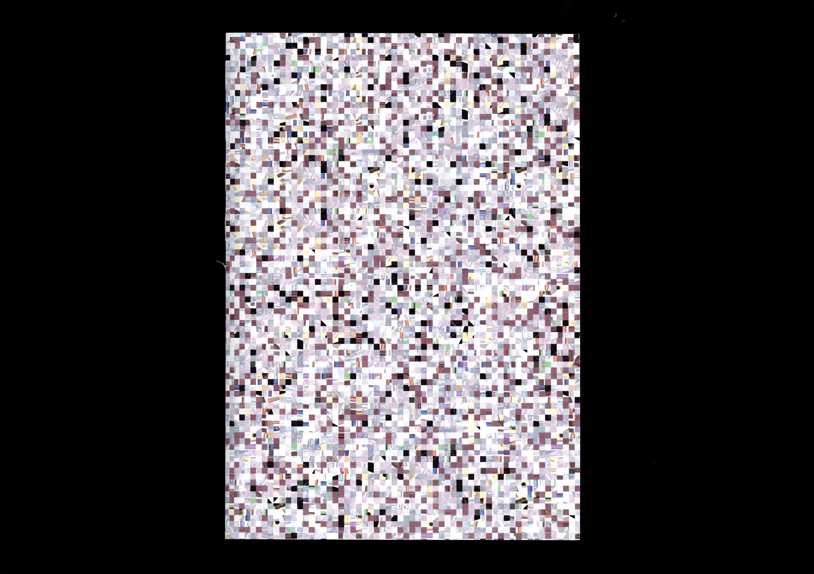


아직까지 얼마나 많은 플라스틱이 우리 주변에 있는지, 재활용은 과연 잘되고 있는 것인지 경각심을 느끼고 앞으로 얼마나 더 많은 노력을 해야 하는지 지표가 되기 바라는 플라스틱에 관한 아카이빙이다.
플라스틱 일기는 우리가 일상생활에서 마주하는 플라스틱 제품들을 스캔한 이미지를 모은 책이다. 하루일과의 시간순에 따라 배치하여 플라스틱이 우리의 삶에 얼마나 큰 부분을 차지하는지 나타내고자 했다.
플라스틱 사전은 플라스틱 안에서도 얼마나 많은 종류가 있고, 각 소재마다의 재활용률 및 방법들을 소개하고자 제작하였다.
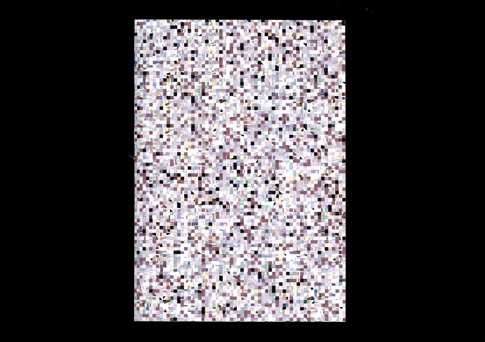
송민지
도서관 펼치기
100 × 180 mm
81 pages
meonnzi@naver.com
책은 살아있다. 살아있는 책은 때때로 떠돌다 나를 만나고, 또 다른 독자에게로 옮겨간다. 그 책이 잠깐 혹은 평생을 머무는 공간을 펼쳐본다. 그저 지나쳐갔던 것들을 눈여겨보고, 새롭게 본다. 낯설게 보이는 것들 너머로, 우리가 펼쳐놓은 세상을 다시 본다.


심가
Monochrome
128 × 205 mm
172 pages
sunnysk0625@gmail.com
김지유
Unfinished Fashion
160 × 420 mm
80 pages
zyookim@gmail.com
옷은 완성된 상태에서만이 아니라, 제작 과정속에서도 의미있는 가치를 지니고 있다. 완벽하게 완성된 최종작품 뒤에는 그것을 이루어낸 작업자들의 노고와 예술적인 표현이 담겨있는데, 이러한 측면에서 보면 옷을 창작하는 과정은 마치 예술 작품의 탄생과정과 유사하다.
이 책은 패션쇼의 퍼포먼스를 중심으로, 완벽하게 완성된 옷이 아닌 옷이 완성되는 과정에서 나타나는 예술적인 측면에 주목한다. 따라서 패션을 단순한 옷이 아닌, 창작의 과정과 예술적인 순간들을 통해 새로운 시각으로 바라보게끔 유도한다.
패션에 대한 관심뿐만 아니라 창의적인 과정과 예술적인 순간에 대한 관심을 자극하는 이 책은 독자에게 특별한 경험과 인사이트를 안겨줄 것이다.

 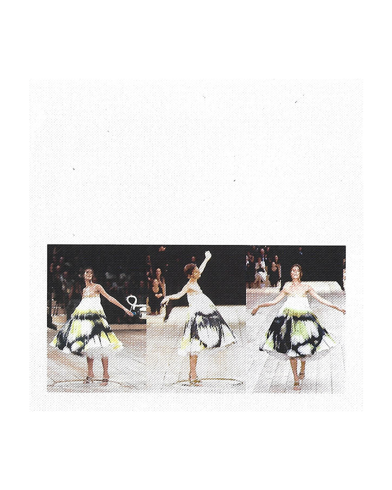
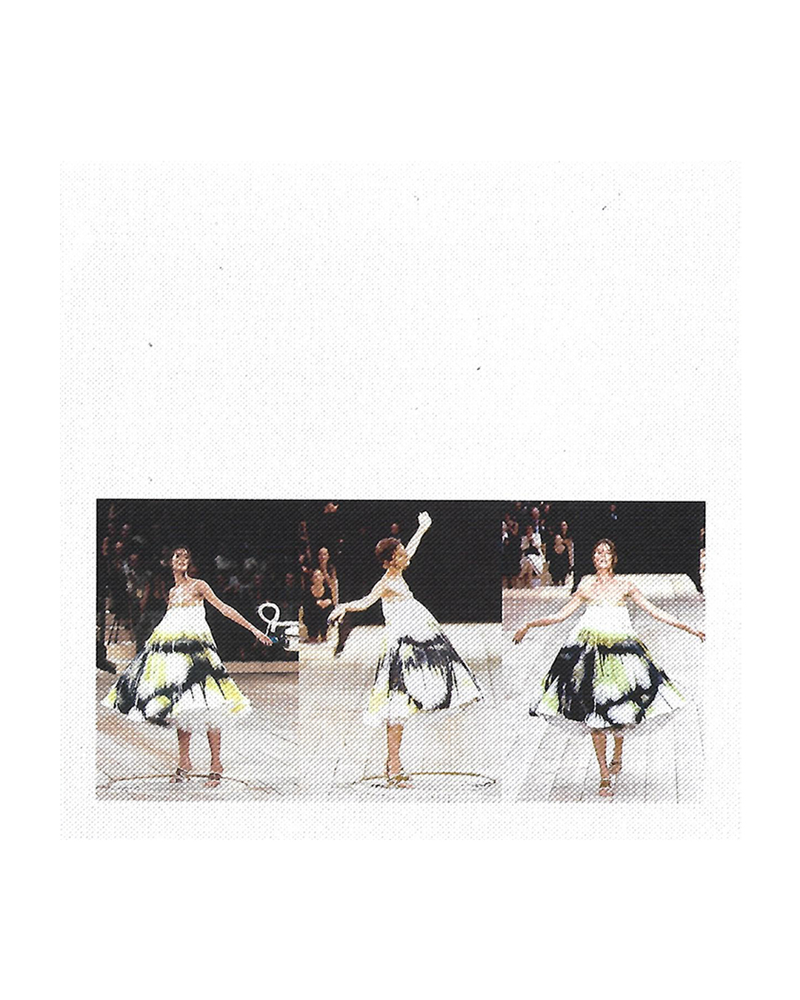


이 책은 패션쇼의 퍼포먼스를 중심으로, 완벽하게 완성된 옷이 아닌 옷이 완성되는 과정에서 나타나는 예술적인 측면에 주목한다. 따라서 패션을 단순한 옷이 아닌, 창작의 과정과 예술적인 순간들을 통해 새로운 시각으로 바라보게끔 유도한다.
패션에 대한 관심뿐만 아니라 창의적인 과정과 예술적인 순간에 대한 관심을 자극하는 이 책은 독자에게 특별한 경험과 인사이트를 안겨줄 것이다.
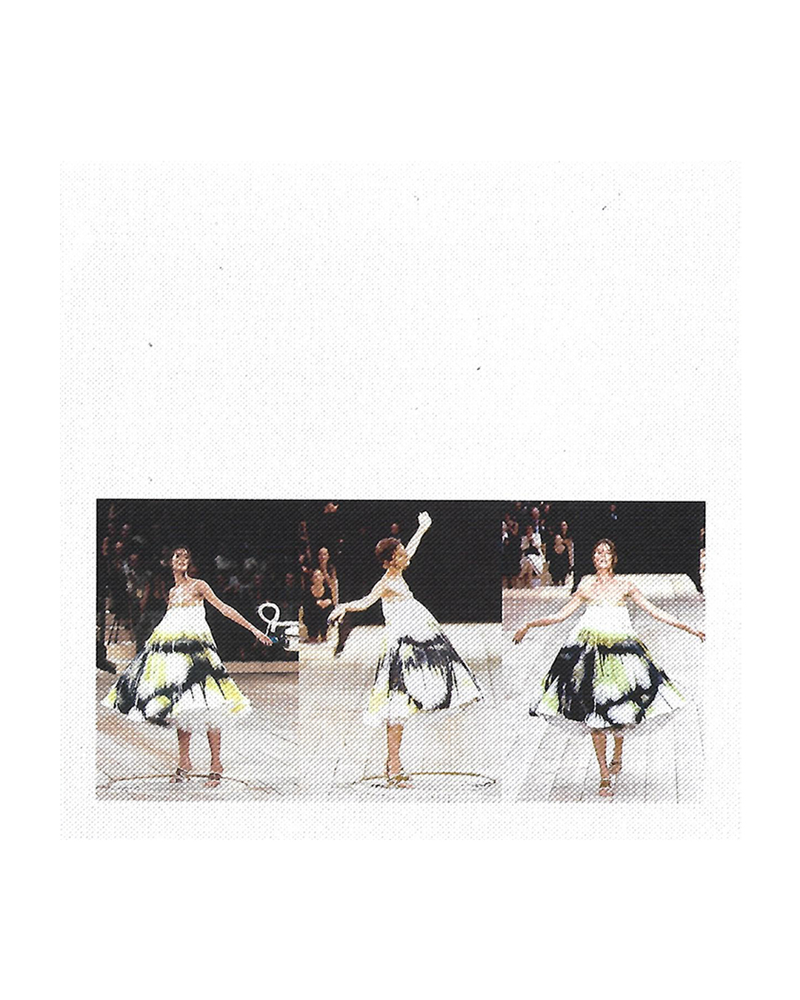
진서영
글리치 아트와 글리치 사과와 글리치 페미니즘
140 × 195 mm
160 pages
idubfishgirls@gmail.com
글리치 아트와 글리치 페미니즘을 사과로 설명한다.
김나영
BOOK SHOP DIARY
182 × 257 mm
80 pages
skdud3531@naver.com
망원과 합정에 있는 북카페와 독립서점들을 다니며 기록한 일지이다. 직접 찍은 사진들과 함께 느낀점을 솔직하게 써내려봤다.


김서현
Whats your pick?
175 × 260 mm
82 pages
ofthes2a@gmail.com
‘냉면에 오이는 빼주세요.’
음식을 주문할 때 특정 채소를 빼달라고 요청해본 적이 있는가? 어렸을 때부터 우리는 골고루 먹는 것에 대한 중요성을 들어왔지만, 시간이 흘러도 이따금씩 채소를 미워하곤 한다. 그렇게 채소보다 고기를 더 좋아하고, 먹지 않은 채소를 접시에 덩그러니 남겨두는 Picky Eater가 되었다. 그렇다면 채소들은 왜 남겨질까? 향이 싫어서, 맛이 없어서, 식감이 별로여서, 가지각색의 이유를 가진 Eater들과 그들에게 선택된 채소들의 이야기를 들어보자. 당신의 pick은 무엇인가요?


 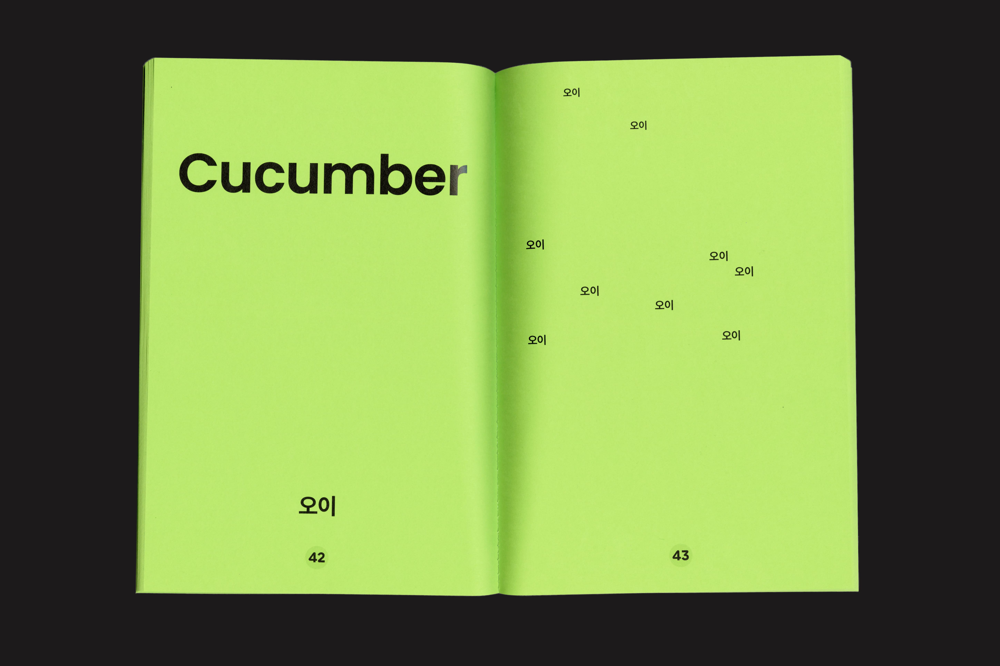
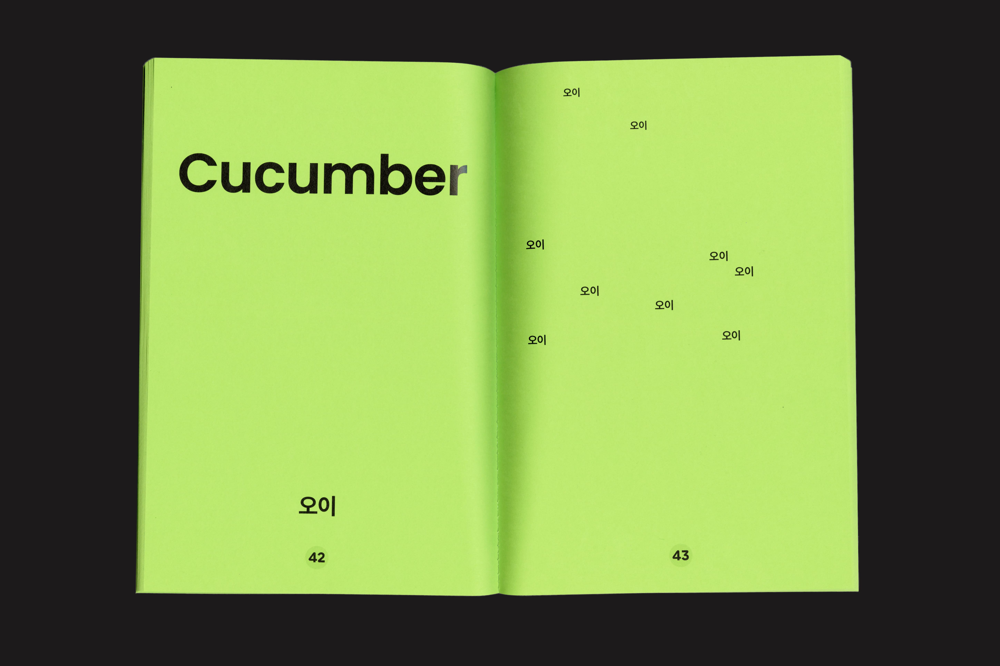


음식을 주문할 때 특정 채소를 빼달라고 요청해본 적이 있는가? 어렸을 때부터 우리는 골고루 먹는 것에 대한 중요성을 들어왔지만, 시간이 흘러도 이따금씩 채소를 미워하곤 한다. 그렇게 채소보다 고기를 더 좋아하고, 먹지 않은 채소를 접시에 덩그러니 남겨두는 Picky Eater가 되었다. 그렇다면 채소들은 왜 남겨질까? 향이 싫어서, 맛이 없어서, 식감이 별로여서, 가지각색의 이유를 가진 Eater들과 그들에게 선택된 채소들의 이야기를 들어보자. 당신의 pick은 무엇인가요?
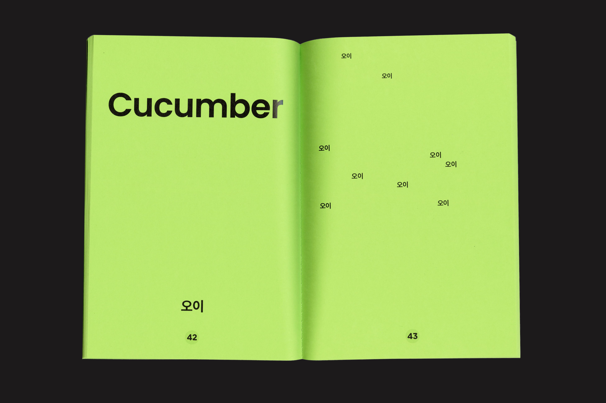
문혜민
이상한 디저트북 Weird Dessert Book
115 × 205 mm
84 pages
mhm2003@naver.com
이 책은 괴식에 속하는 이상한 디저트류 상품 18개를 모아 아카이빙한 책이다.
이상한 디저트들은 상상력과 창의력이 만나 만들어진 결과물로, 디저트와 어울릴 거라고는 상상도 못한 소재들이 조합되어 독특한 맛과 비주얼을 자아낸다. 또한 전례 없이 사용되는 재료와 창의적인 레시피로 다채로운 컬러감을 자랑한다. 이 책에서 소개되는 이상한 디저트들은 현대 소비자들의 펀슈머[fun+(con)sumer]적인 괴식 입맛을 만족시키는 역할을 하며, 단순히 음식을 즐기는 것이 아니라 호기심과 재미를 탐구하는 행위를 상징한다.

 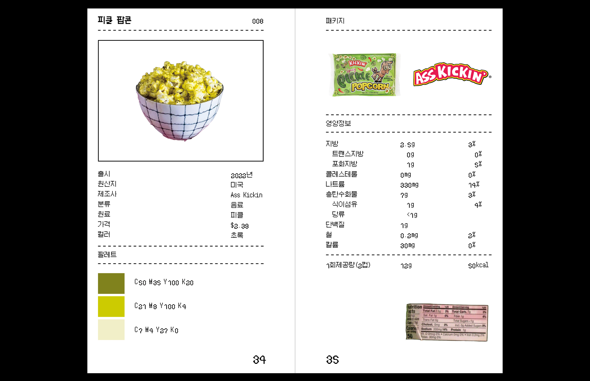
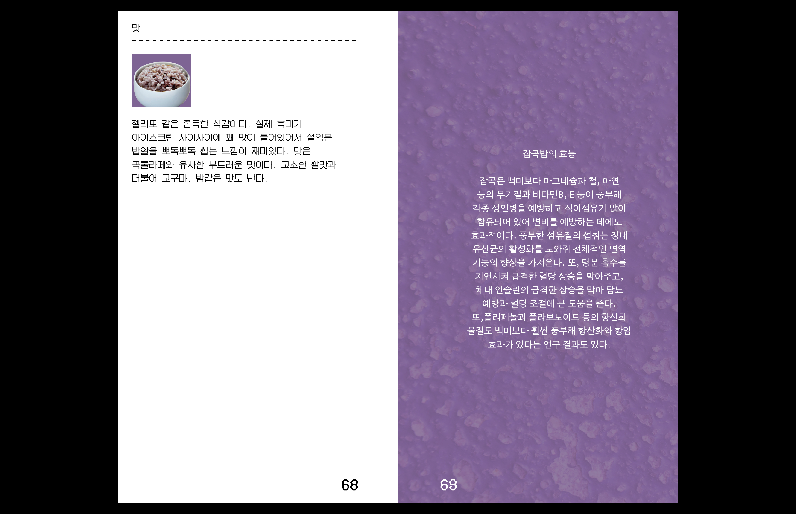
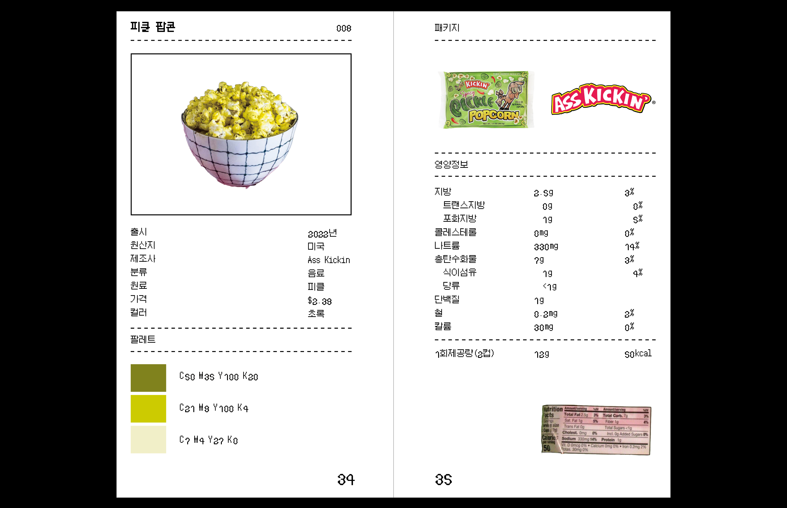
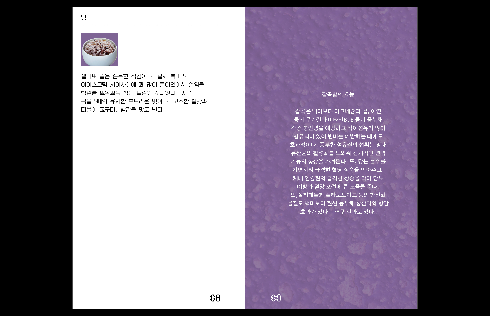


이상한 디저트들은 상상력과 창의력이 만나 만들어진 결과물로, 디저트와 어울릴 거라고는 상상도 못한 소재들이 조합되어 독특한 맛과 비주얼을 자아낸다. 또한 전례 없이 사용되는 재료와 창의적인 레시피로 다채로운 컬러감을 자랑한다. 이 책에서 소개되는 이상한 디저트들은 현대 소비자들의 펀슈머[fun+(con)sumer]적인 괴식 입맛을 만족시키는 역할을 하며, 단순히 음식을 즐기는 것이 아니라 호기심과 재미를 탐구하는 행위를 상징한다.
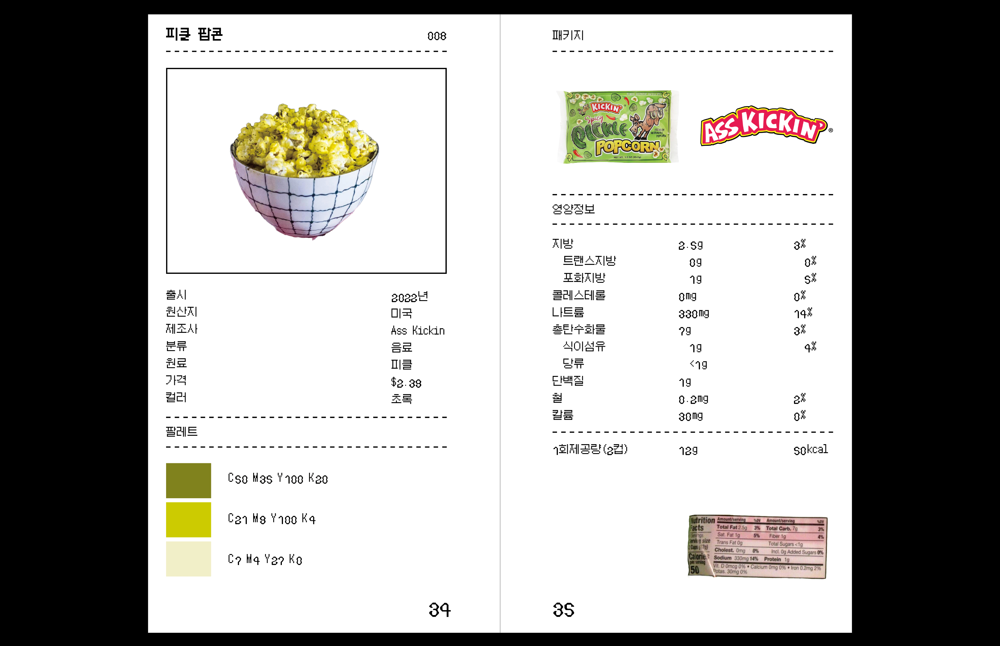
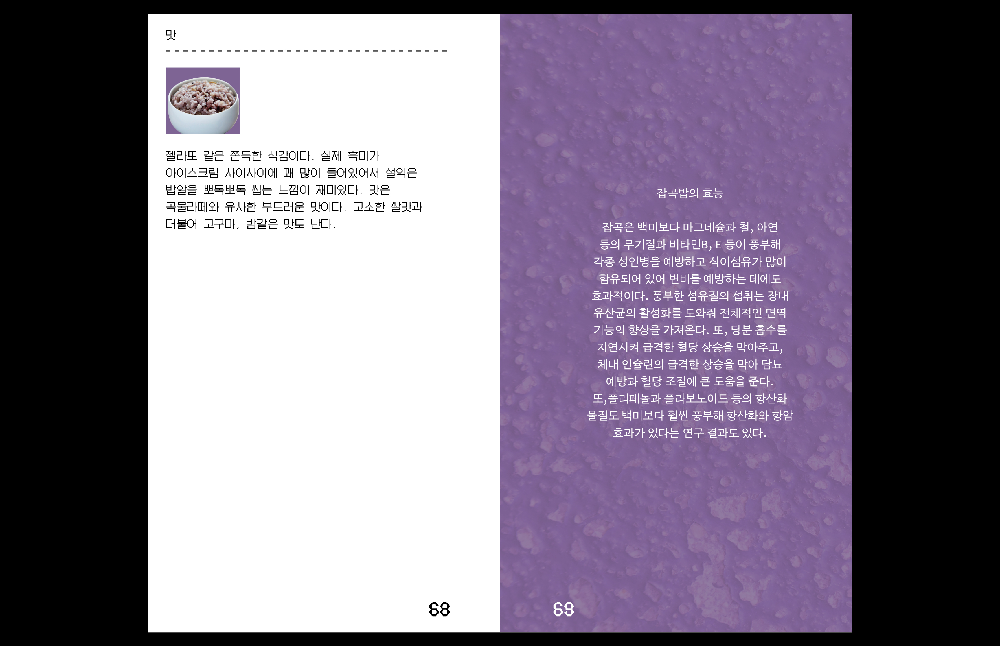
서예현
Barbie Ordinary
140 × 200 mm
171 pages
yehyun03@naver.com
이 책은 바비가 단순한 인형이 아닌, 사회적인 다양성과 함께 진화하고 여러 사람들에게 다양한 메시지를 전달하는 상징으로서 그 변화와 발전을 아카이빙한 것이다. “외모는 다양하고, 아름다움도 다양하다”는 메시지를 전달하며, 자신의 몸매를 사랑하고 받아들이는 것의 중요성을 전달하고자 한다.
이수민
뜬금 없음에 대한 탐구
180 × 95 mm
82 pages
soomeegoo@gmail.com
아무렇게나 기록된 메모, 갤러리에 넘쳐나는 쓸모 없는 스크린샷들 사이에서 발견한 우연으로 시작된 이 탐구는 뜬금 없음과, 뜬금 없이 등장한 웹이라는 매체 사이에 연결점을 제시합니다. 웹사이트와 함께합니다.


강소정
Sauce.zip
150 × 210 mm
245 pages
sojuunngk@naver.com
인간은 생존을 넘어 더욱 맛있고 흥미로운 가치를 탐색하려는 본능을 지닌 ‘소스 유전자’에 의해 소스를 탄생시켜내고야 만다. 에선 소스를 단순히 요리를 위한 부가적인 자극제로 바라보지 않는다. 빠르게 흘러가는 퍽퍽하고 밍밍한 액체 현대 시대 속, 일종의 ‘소스’로서 우리는 어떠한 형태로 세상에 흩뿌려지고 스며들 것인가에 대한 의문점을 해결해 줄 체계적 시스템이자 열쇠로 바라보고 있다. 액체든, 고체든, 입자든. 어떠한 형태이든! 무엇이든 될 수 있는 우리 소스들의 모든 이야기와 휴머니즘을, 이 작고 이상한 Sauce.zip 포맷에 압축해보았다.


김민주
MY VINTAGE COLLECTION
182 × 260 mm
120 pages
mjkimya@naver.com
이 책은 지금까지 모은 빈티지 수집품을 아카이빙한 책이다. 상자 안에 들어있는 물건들을 종이 위로 불러내어 언제 어디서든 볼 수 있도록 만들었다.


배주영
Everyday for Christmas
220 × 190 mm
330 pages
bjy021111@gmail.com


 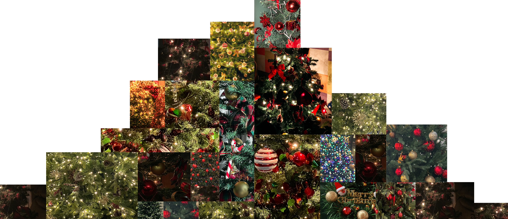
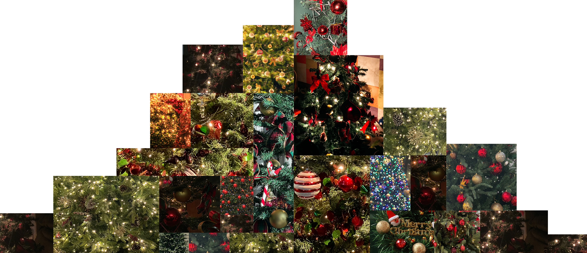

신채원
언어의 무게추
100 × 210 mm
96 pages
wtotw2003@g.hongik.ac.kr
이미 가벼워져버린 말들을 어떻게 하면 다시 끌어다 앉힐 수 있을까? 일회성 소비의 결정체와도 같은 '밈' 언어에 디자이너만의 무게추를 매달아 무게를 부여하는 실험을 한다.


이가연
All About Blur
190 × 200 mm
200 pages
lky38220714@gmail.com
이렇게까지 이름값을 못하는 밴드가 있었던가?
열정과 낭만이 가득하던 그 시대에도, 나에게도 너무나 명확하고 확실한 획을 남겨버린 ‘블러’의 이야기.

열정과 낭만이 가득하던 그 시대에도, 나에게도 너무나 명확하고 확실한 획을 남겨버린 ‘블러’의 이야기.
허지민
조각보 연구
[1] 175 × 175 mm
[2] 175 × 95 mm
[3] 175 × 175 mm
[2] 175 × 95 mm
[3] 175 × 175 mm
each 182, 40, 56 pages
jenny×purple@gmail.com
해체와 재조합 프로젝트
●▲■ 조각보 접다 담다 프로젝트 구성 소개
세계를 구성하는 '만물의 근원'에 대한 탐구는 기원전부터 지금까지 끊이지 않고 있다. 세상의 구성 원리와 최소 단위를 파악하고 모든 것을 재구성할 수 있을 것이라는 욕망이 이러한 탐구의 원동력이 되었다. 즉, 세상의 본질을 담아내는 것이다. 그러한 해체와 재조합의 방식을 조각보에 적용해서 연구로 풀어나가게 되었다. 위 책들은 조각보가 가지는 특징과 의의를 다양한 매체로 재해석 한 프로젝트 결과물이다. 총 3권의 책으로 구성이 되어있다. 제1권에서는 자투리 천을 이용하는 조각보의 주요 특징을 현대의 시각으로 바라보면, 무작위의 낙서를 수집한 후 무한으로 배포할 수 있는 방법에 대한 과정을 그래픽으로 표현한 작업이 담겨있는 책이다. 제2권에서는 조각보가 가지는 의미와 특별한 점을 소개하는 글 형태로 조각보를 재해석하였다. 제3권에서는 대상을 책으로 비유를 한다면, 어떠한 형태로 나타날 수 있을지에 관해 다룬 실험적인 조각보 책이라고 말할 수 있다.
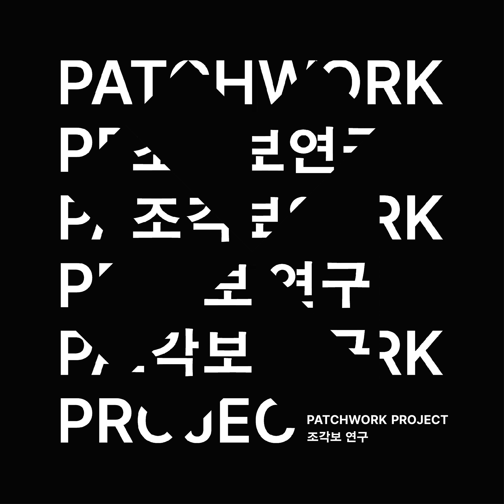

 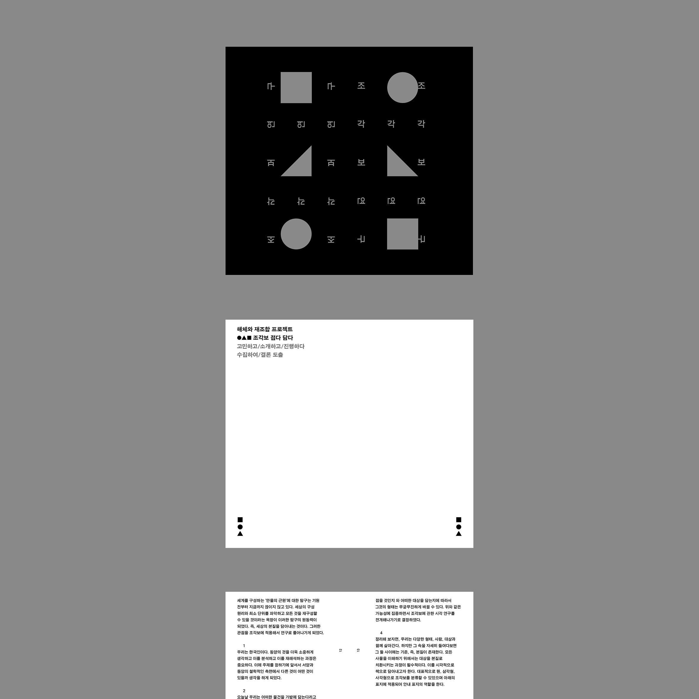
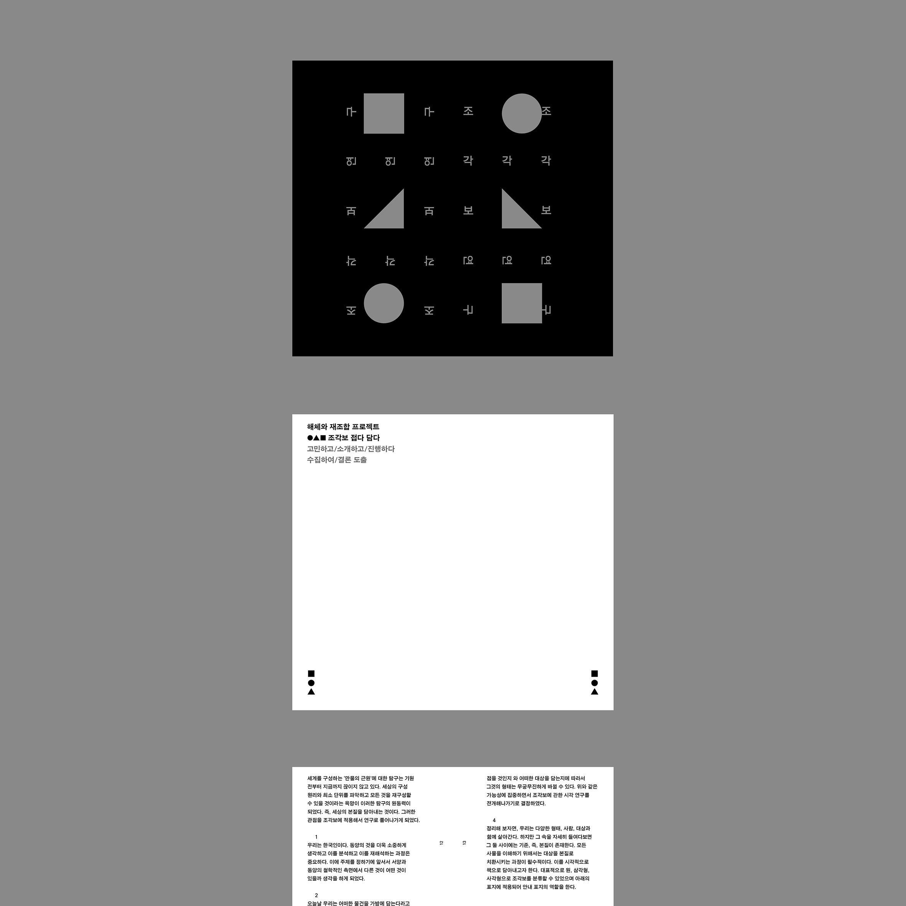

●▲■ 조각보 접다 담다 프로젝트 구성 소개
세계를 구성하는 '만물의 근원'에 대한 탐구는 기원전부터 지금까지 끊이지 않고 있다. 세상의 구성 원리와 최소 단위를 파악하고 모든 것을 재구성할 수 있을 것이라는 욕망이 이러한 탐구의 원동력이 되었다. 즉, 세상의 본질을 담아내는 것이다. 그러한 해체와 재조합의 방식을 조각보에 적용해서 연구로 풀어나가게 되었다. 위 책들은 조각보가 가지는 특징과 의의를 다양한 매체로 재해석 한 프로젝트 결과물이다. 총 3권의 책으로 구성이 되어있다. 제1권에서는 자투리 천을 이용하는 조각보의 주요 특징을 현대의 시각으로 바라보면, 무작위의 낙서를 수집한 후 무한으로 배포할 수 있는 방법에 대한 과정을 그래픽으로 표현한 작업이 담겨있는 책이다. 제2권에서는 조각보가 가지는 의미와 특별한 점을 소개하는 글 형태로 조각보를 재해석하였다. 제3권에서는 대상을 책으로 비유를 한다면, 어떠한 형태로 나타날 수 있을지에 관해 다룬 실험적인 조각보 책이라고 말할 수 있다.
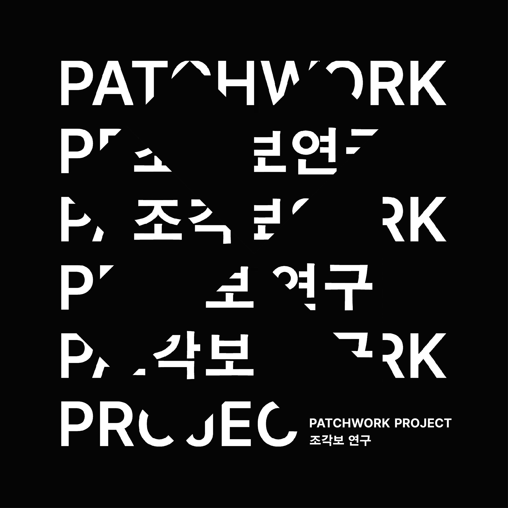
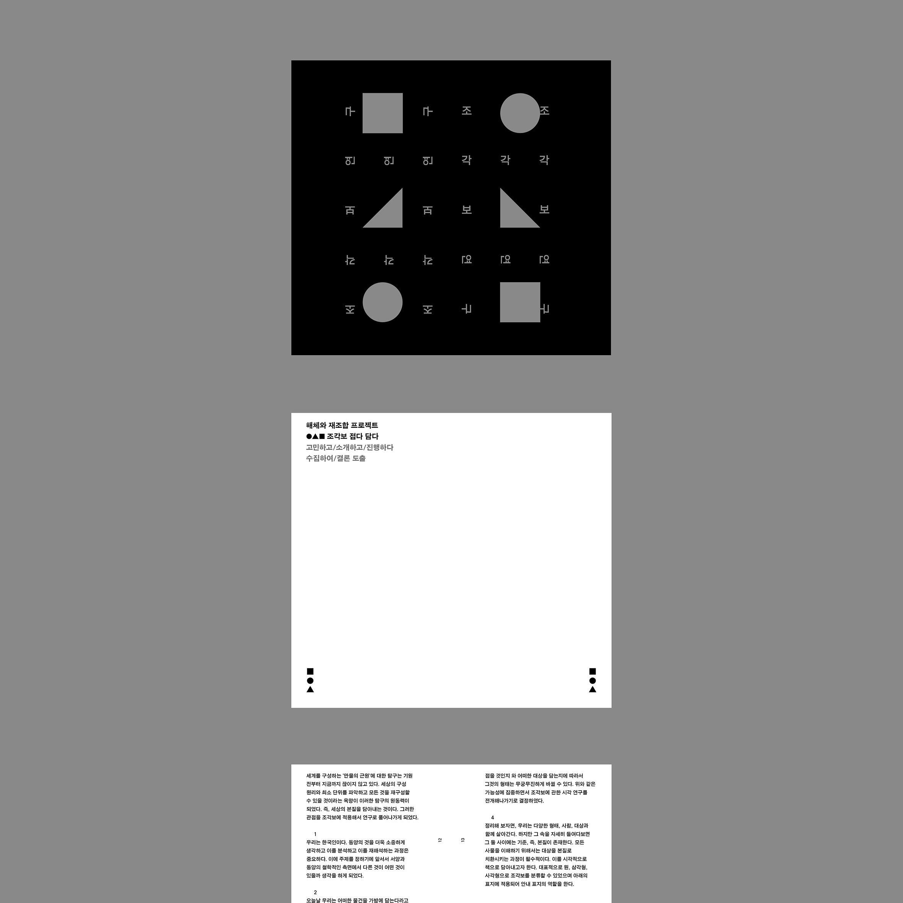
이예담
?!
148 x 210 mm
78 pages
ydlee9898@gmail.com
친숙하지만, 알다가도 모르겠는 패션을 퀴즈를 통해 재밌게 알아갈 수 있도록 한다. 중간중간 다양한 읽을 거리와 함께 패션 브랜드나 디자이너의 역사, 스타일 등에 대해 배울 수 있다.


강민주
옛 정취와 살아가기
170 × 240 mm
page
alswnlinda@naver.com
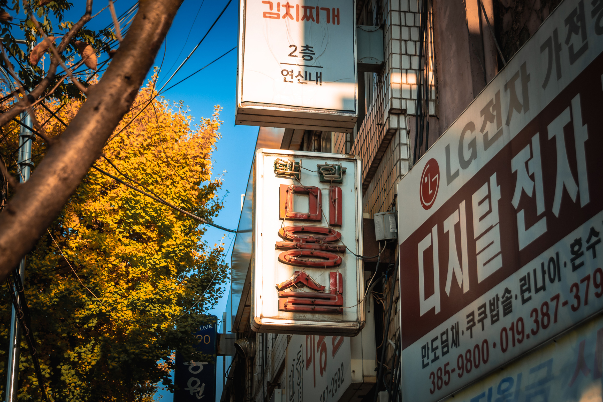
안기진
Mushipedia
142.5 × 204 mm
100 pages
dksrlwls5628@gmail.com
"모든 버섯은 먹을 수 있지만, 어떤 버섯은 한 번만 먹을 수 있다." 버섯은 얼마나 위협적이고 아름다우며 매력적인 생물인가? 인류 역사 구석구석 숨어있는 버섯에 얽힌 이야기와, 독특하고 멋진 버섯 이야기를 엮은 세상에서 가장 웃긴 버섯 백과사전.


김영서
만화와 우리
90 × 160, 155 × 145 mm
each 91, 6 pages
springsd@naver.com
추억의 만화 소개
윤지아
Step : 인간이 내딛는 힘
274 × 194 mm
83 pages
jiah0401@naver.com
인간은 끊임없이 도전하며 성장합니다. 왜 인간은 현재에 머무르지 않고 도전하는 걸까요?
도전, 그것은 꼭 인간이 아니라 모든 생물의 생존에 있어서 필수불가결한 개념입니다. 그러나 우리 인간의 도전은 좀 더 정신적인 개념에 가깝습니다. 도전하고, 성장하며, 좌절하더라도 끝내 극복해냅니다. 저는 이러한 과정이 인간의 발걸음에 담겨 있다고 생각합니다. 걸음마부터 시작해서, 뜀박질로 나아가고, 넘어져도 다시 일어나면서 우리는 한 걸음 더 내딛습니다. 이 한 발걸음이 다음 국면을 맞이하기 위한 열쇠인 것이죠. 그래서 이 책의 제목은 ‘STEP’입니다. 인간의 발걸음이자 어떤 목표를 달성하기 위한 움직임이라는 뜻을 담고 있는 단어입니다.
‘인간에게 도전이란 무엇일까’에 대한 답변을 풀어내며, 제가 생각하는 인간의 발걸음에 대한 내용을 담았습니다. 발걸음을 간접적으로 경험해보는 순간이 되었으면 좋겠습니다.
도전, 그것은 꼭 인간이 아니라 모든 생물의 생존에 있어서 필수불가결한 개념입니다. 그러나 우리 인간의 도전은 좀 더 정신적인 개념에 가깝습니다. 도전하고, 성장하며, 좌절하더라도 끝내 극복해냅니다. 저는 이러한 과정이 인간의 발걸음에 담겨 있다고 생각합니다. 걸음마부터 시작해서, 뜀박질로 나아가고, 넘어져도 다시 일어나면서 우리는 한 걸음 더 내딛습니다. 이 한 발걸음이 다음 국면을 맞이하기 위한 열쇠인 것이죠. 그래서 이 책의 제목은 ‘STEP’입니다. 인간의 발걸음이자 어떤 목표를 달성하기 위한 움직임이라는 뜻을 담고 있는 단어입니다.
‘인간에게 도전이란 무엇일까’에 대한 답변을 풀어내며, 제가 생각하는 인간의 발걸음에 대한 내용을 담았습니다. 발걸음을 간접적으로 경험해보는 순간이 되었으면 좋겠습니다.
장지윤
BALLERINA = ASTRONAUT
148 × 148 mm
123 pages
jiyoon1108@g.hongik.ac.kr
이 아카이빙은 인터넷 잡지인 <ㅍㅍㅅㅅ>의 배추도사의 글 중 “발레는 무중력이다.”라는 부분에서부터 진행되었다. 발레리나와 우주인은 서로 다른 것 같지만, 많은 공통점이 있다. 모두 무중력을 경험하고 깊은 인내를 가지고 임해야 하며, 많은 어린이들의 꿈이기 때문이다. 또한 쉽게 경험하지 못한다는 점에서 그들은 환상 속의 존재이며, 환상을 직접 경험할 수 있다는 공통점이 있다.어디가 발레 부분이고 우주 부분인지 헷갈리도록 내용을 구성해, “발레와 우주는 같다.”라는 주제를 담으려고 했다. 또한, 각 부분의 오른쪽 상단 모서리 부분에 <발레하는 우주인>, <우주에 있는 발레리나> 그림을 플립북 형태로 담아, 주제를 표현하려고 했다.
발레리나는 우주인이다. 우주인은 발레리나다.


발레리나는 우주인이다. 우주인은 발레리나다.
차민경
삼총사 여행기
190 × 240, 148 × 210 mm
112 pages
mincha0408@gmail.com
<삼총사 여행기>: 삶에 지친 세 친구의 속세 탈출 대작전


최예린
비문자로 사유하기
[1] 180 × 250 mm
[2] 150 × 170 mm
[2] 150 × 170 mm
96, 24 pages
c235421@g.hongik.ac.kr
이 사유는 당신이 읽고 있고, 읽었고, 읽을 예정인 문자에 의해 사람들에게 경시되었던 비문자를 주제로 했다. 전체적인 테마는 점과 선으로, 다양한 종류의 비문자가 공통적으로 구현할 수 있는 시각적 형태의 최소 단위라는 점에서 차용해 진행했다.
본문에는 비문자 개체 중 빛, 소리, 신체, 사물을 선택해 각 개체가 인간의 정신에 어떠한 영향을 미치고 어떠한 사유를 가능케 하는지 이해를 돕기 위해 설명 및 사진 자료가 함께 담겨 있다.
마지막에는 단편 이야기를 담은 부록을 추가하여 비문자 기록물을 체험해 볼 수 있도록 의도했다.


본문에는 비문자 개체 중 빛, 소리, 신체, 사물을 선택해 각 개체가 인간의 정신에 어떠한 영향을 미치고 어떠한 사유를 가능케 하는지 이해를 돕기 위해 설명 및 사진 자료가 함께 담겨 있다.
마지막에는 단편 이야기를 담은 부록을 추가하여 비문자 기록물을 체험해 볼 수 있도록 의도했다.
권지윤
THE BEST
210 × 280 mm
238 pages
kwonjy774@gmail.com
“한번 영혼에 받아들여진 음악은 일종의 정신이 되어 결코 죽지 않는다”
화려한 극 속 세계를 증폭시키는 배우들의 웅장한 하모니를 들으며 그 안에서 우린 우리만의 영감을 확립한다. 뮤지컬이란 하나의 예술을 통해 얻을 수 있는 세계란 무궁무진하다.
이 책은 뮤지컬계의 정점이라 불리우는 브로드웨이와 웨스트 앤드에 공연되고 있는 뮤지컬들을 소개하며, 각각의 극들이 나타내는 가지각색의 연출과 색감에 집중한다. 흘러가는 몰입의 순간들을 포착하여 뮤지컬의 예술적 측면들을 전시하고, 이를 통해 독자는 뮤지컬을 보다 넓고 섬세한 시각으로 바라볼 수 있다.
사람들이 극장 안으로 들어가는 순간 그 세계로 빠져드는 것과 같이, 이 책을 읽는 독자들도 장을 넘길 때마다 각기 다른 뮤지컬의 매력에 빠져들기를 바란다.
이 책은 뮤지컬계의 정점이라 불리우는 브로드웨이와 웨스트 앤드에 공연되고 있는 뮤지컬들을 소개하며, 각각의 극들이 나타내는 가지각색의 연출과 색감에 집중한다. 흘러가는 몰입의 순간들을 포착하여 뮤지컬의 예술적 측면들을 전시하고, 이를 통해 독자는 뮤지컬을 보다 넓고 섬세한 시각으로 바라볼 수 있다.
사람들이 극장 안으로 들어가는 순간 그 세계로 빠져드는 것과 같이, 이 책을 읽는 독자들도 장을 넘길 때마다 각기 다른 뮤지컬의 매력에 빠져들기를 바란다.
노성주
스타벅스 블루보틀 이용 가이드
186 × 136 mm
each 44 pages
rachelbeauty@naver.com
이 책은 카페, 그 중에서도 스타벅스와 블루보틀에 대해 중점적으로 다루고 있다. 이 둘이 가진 특징을 면밀히 분석하고 차이점을 밝히는 설명서이다.
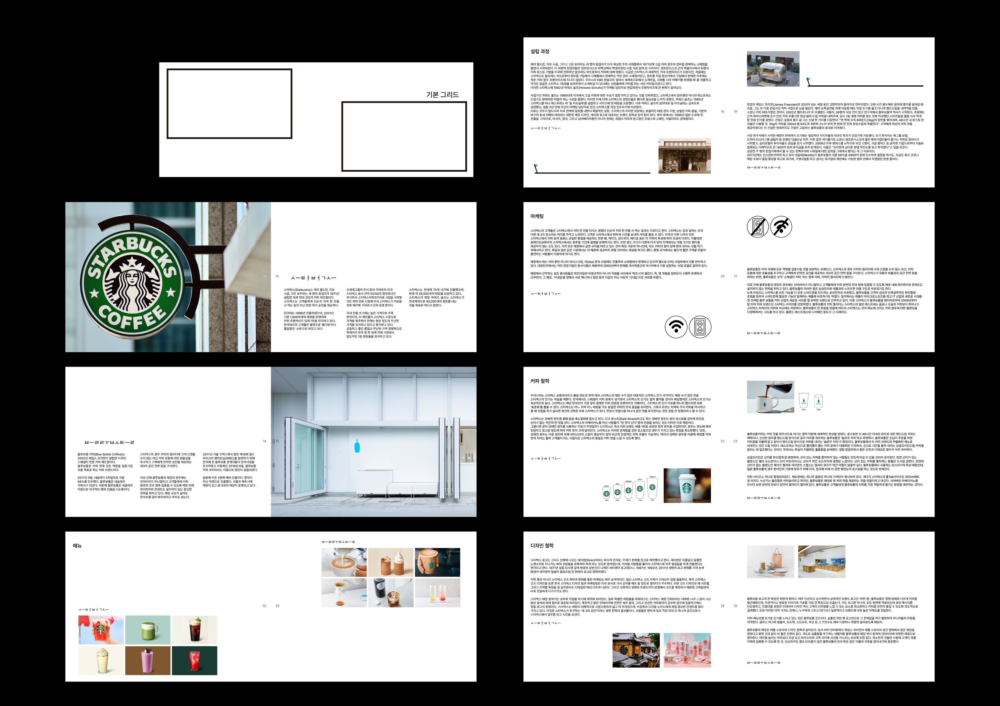
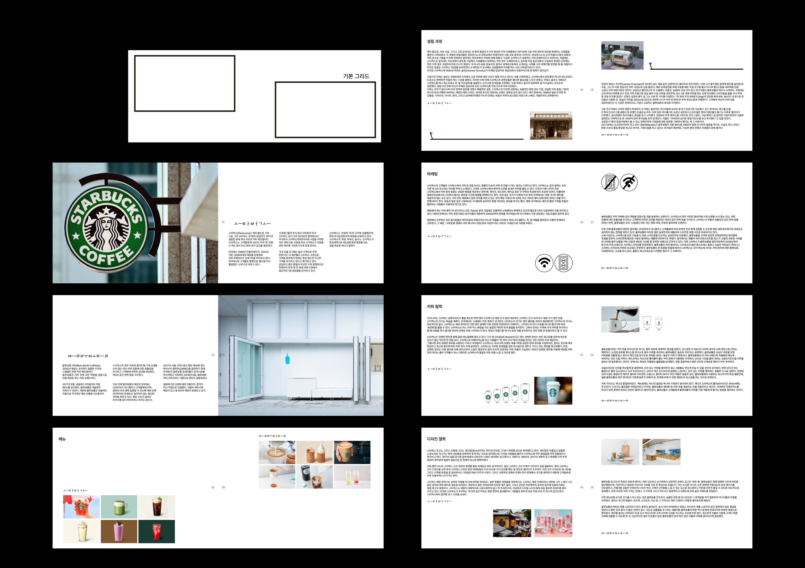
박소민
PINK AND
210 × 210 mm
164 pages
spark79sasha@naver.com
말 많고 탈 많은 사랑스러운 색 핑크!
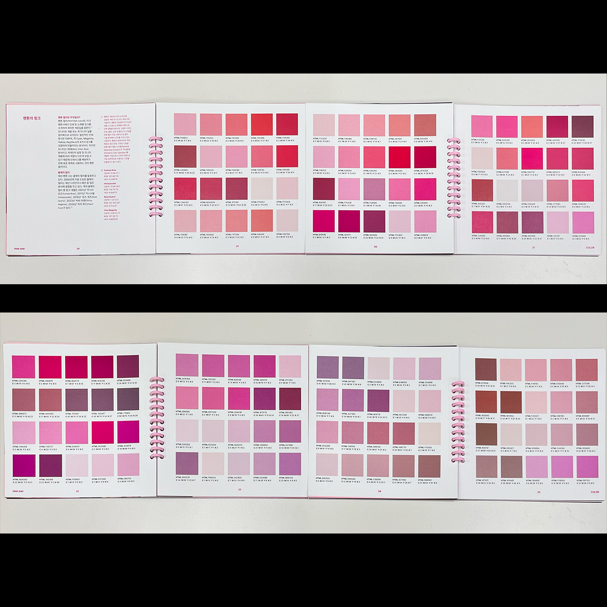
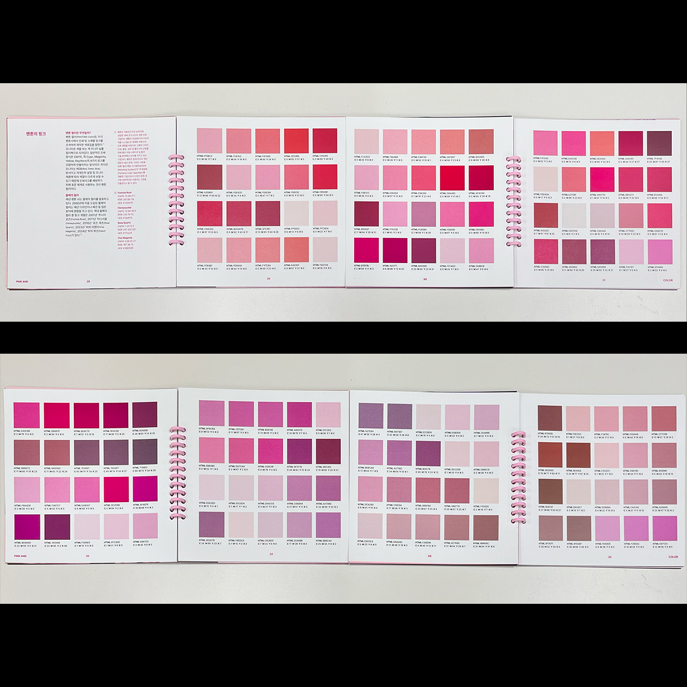
송현주
Apollo program
105 × 200 mm
80 pages
iamsonunu@naver.com
인류는 언제, 어떻게 달에 갔는가

우유민
우리는 작품이 아니라 이름을 삽니다
210 × 297 mm
77 pages
wym030920@naver.com
손의 흔적이자 예술적인 제스처인 예술가의 서명에 사람들은 “우리는 작품이 아니라 이름을 삽니다”라고 말한다.
이하림
UNDERSTANDING COMICS
128 × 187 mm
192 pages
00leehl01@gmail.com
가장 잘 만들어진 만화 이론서인 스콧 맥클라우드의 <만화의 이해>, 제가 한 번 재구성 해보았습니다.


최유진
유물에서 귀여움 발굴하기
148 × 210 mm
154 pages
rjwp03@naver.com
역사책 속에서만 보던 유물들, 이름 외우기에만 급급했던 괴로웠던 나날들! 이런 유물을 사랑할 수는 없을까? 자세히 보아야 귀엽다. 유물도 그렇다. 귀여우면 모든 것이 용서된다. 박물관 속 숨어있던 귀여운 유물들로 여러분의 마음을 사로잡아 보겠다. 본격 역사 헤이터를 위한 유물 호감도 높이기 프로젝트, 유물에서 귀여움 발굴하기!
최선우
REBRANDING
[1] 182 × 257 mm
[2] 148 × 200 mm
[2] 148 × 200 mm
each 82, 12 pages
sunwoo7796@naver.com
브랜딩이 브랜드를 탄생시키고 가꾸어 나가는 작업이라면, 리브랜딩은 브랜드의 옷을 갈아입히는 과정이라고 할 수 있다. 본 책에서는 리브랜딩에 초점을 맞추어 그 개념을 탐구하고 다양한 사례들을 통해 리브랜딩을 성공적으로 마칠 수 있는 방법을 알아본다. 나아가 책에서 다룬 개념과 사례들을 적용하여 브랜드 '시드물'을 직접 리브랜딩해보고, 그 결과물을 부록으로 함께 첨부하여 리브랜딩에 대한 연구를 마무리한다.

최혜림
어디에 있는데?
120 × 400 mm
92 pages
c252074@g.hongik.ac.kr
사랑이 막연해질 땐 이 책을 향유하세요.
Kelly
A Tale As Old As Time
200 × 250 mm
128 pages
kellylim2002@gmail.com
Throughout history, man has struggled to define time. From time that flows with the seasons to the mechanical tick of the clock, how has our relationship with time evolved over the years?
How do we measure time? When does time feel slow, when does it feel fast? What does time say about the human condition?
A Tale as Old as Time is an archive of our relationship with time, told via literature, art, film, songs, internet posts and more. It reflects our understanding of time and e×presses its subjective nature.

How do we measure time? When does time feel slow, when does it feel fast? What does time say about the human condition?
A Tale as Old as Time is an archive of our relationship with time, told via literature, art, film, songs, internet posts and more. It reflects our understanding of time and e×presses its subjective nature.